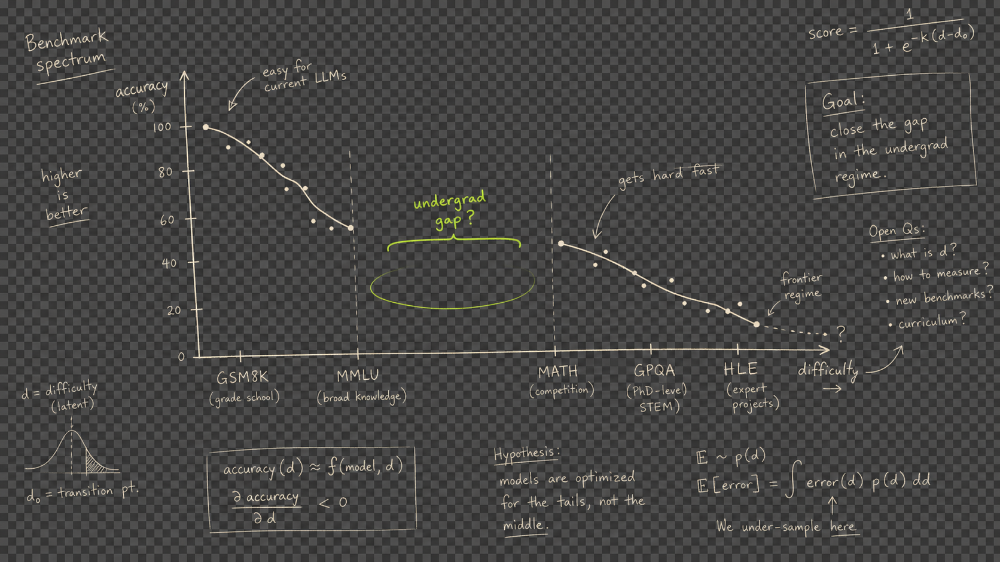
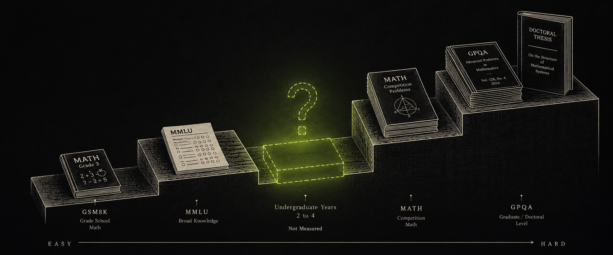
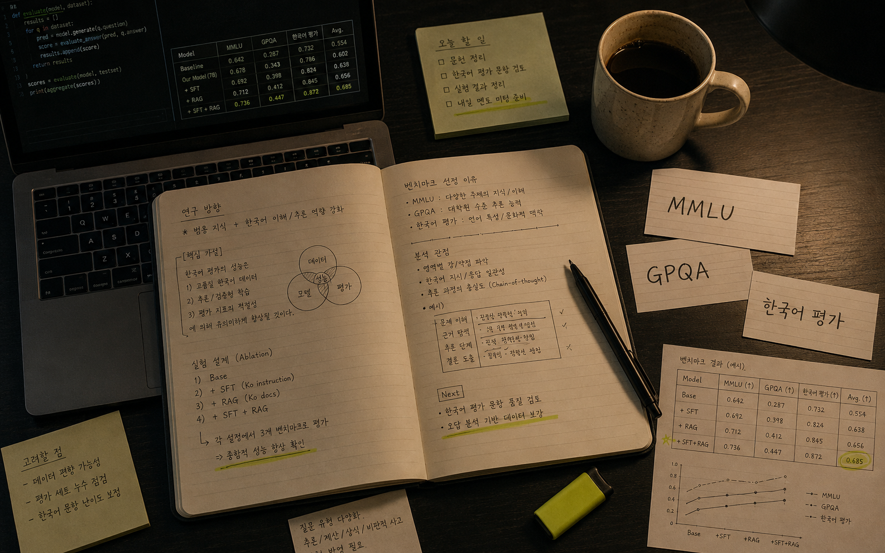

학생 중심 평가
"얼마나 똑똑한가"가 아니라 "나한테 얼마나 도움이 되는가"를 측정한다.

한국 대학생을 위한 AI 모델 벤치마크. 기존 벤치마크가 측정하지 못하는 "학생에게 실제로 도움이 되는가"를 평가하고, 내 상황에 맞는 적정 비용 · 적정 성능의 AI를 선택할 수 있도록 돕는다.
§01 / Vision
Question · 01
이 AI는 대학 수준의 과제·프로젝트·논문에 실제로 도움이 되는가?
Question · 02
이 AI는 학생이 스스로 배우고 성장하도록 잘 지도하는가?
"얼마나 똑똑한가"가 아니라 "나한테 얼마나 도움이 되는가"를 측정한다.
가장 비싼 모델이 항상 최선은 아니다. 내 상황에 맞는 가성비 최선을 찾는다.
공개 벤치마크 점수와 실제 학생 체감의 괴리를 직접 비교하여 밝힌다.
내가 어려웠던 문제가 벤치마크에 반영되어 다른 학생에게도 도움이 된다.
한국어 학술 문체, 한국 교재, 한국 학생이 실제로 묻는 방식을 담는다.
매 학기 새 문제가 유입되며 시대와 교육과정에 맞춰 진화한다.
§02 / Problem
난이도 스펙트럼 위에서 "학부 2~4학년" 구간이 구조적으로 비어 있다. 고등학교 문제와 PhD 연구 사이 — 학생들의 실제 학습 현장은 누구도 측정하지 않는다.

The Missing Gap
학부 수준의 벤치마크는 존재하지 않는다.
실제 과제는 서술형·코딩 프로젝트·레포트인데 벤치마크는 4지선다 정답 고르기뿐이다.
학생은 단계별 풀이와 설명을 원하는데, 벤치마크는 최종 답이 맞으면 끝이다.
한국어 학술 문체와 한국 교재 맥락은 어떤 벤치마크도 측정하지 않는다.
맞는 답 ≠ 도움이 되는 답. 설명력·참고자료·오류 인정은 아무도 측정하지 않는다.
§03 / Two Tracks
학생에게 도움이 된다는 것은 두 차원에서 측정된다 — 결과물(Outcome)과 과정(Process).
대학 실전 과제 벤치마크
"이 AI는 내 과제에 쓸 수 있나?"
Outcome-Oriented학습 어시스턴트 벤치마크
"이 AI는 내가 더 잘 배우게 도와주나?"
Process-Oriented§04 / Platform
SAM(Smart AI Multiplexer)은 순순팩토리가 개발한 AI 라우팅 플랫폼이다. 단일 API로 GPT, Claude, Gemini, DeepSeek 등 30개 이상의 AI 모델을 호출하고, 목적·비용·성능에 따라 최적 모델을 자동으로 선택한다.
본 프로젝트는 SAM을 통해 모든 벤치마크 평가를 실행한다. 동일한 문제를 동일한 조건으로 여러 모델에 동시 제출하고, 결과를 비교·분석하는 것이 가능하다.
SAM 플랫폼 방문 ↗GPT · Claude · Gemini · DeepSeek · Kimi 등 주요 모델을 하나의 엔드포인트로 호출
요청의 성격(코딩·추론·창작)과 예산에 따라 최적 모델을 자동 선택
공개 벤치마크 기반 OVR·Chat·Code·Reason 점수를 지속 업데이트
모델별 입력/출력 토큰 단가를 실시간 비교 — 학생 예산에 맞는 선택 가능
§05 / Verification
순순팩토리의 AI 라우팅 서비스 SAM을 통해 현존하는 대부분의 AI API를 직접 호출·평가한다. SAM에는 이미 공개 벤치마크 기반 랭킹이 존재하며, 우리는 그 점수와 학부 학생의 실제 체감 사이의 괴리를 측정한다.
| # | Model | OVR | Chat | Code | Reason | Price / M tok |
|---|---|---|---|---|---|---|
| 01 | Claude Opus 4.7 | 94.0 | 95 | 96 | 93 | $5.5 / 27.5 |
| 02 | GPT-5.4 Pro | 92.7 | 94 | 94 | 96 | $15 / 120 |
| 04 | Gemini 3.1 Pro | 90.8 | 94 | 90 | 93 | $2 / 12 |
| 07 | Kimi K2.6 | 84.0 | 87 | 93 | 75 | $0.6 / 2.5 |
| 10 | DeepSeek V4 Flash | 72.7 | 77 | 78 | 65 | $0.14 / 0.28 |
| 12 | DeepSeek V3.2 | 68.6 | 72 | 73 | 61 | $0.62 / 1.85 |
Probe / 01
OVR 94점 모델이 정말 학부 과제에서도 1등인가?
Probe / 02
$0.14 모델이 간단한 과제에는 충분하지 않은가?
Probe / 03
CODE 93점이 실제 학부 코딩 과제에서도 그만큼 좋은가?
Core Question
내 상황에서 어떤 모델이 가성비 최선인가?
§06 / Program

위밋(WE-Meet)은 기업과 대학이 협력하여 학생들이 실제 산업 현장의 문제를 해결하며 실무 역량을 기르고 학점을 인정받는 산학연계 프로젝트다.
§07 / Team
멘토 1인 + 학생 연구원 2인. 모든 기록은 GitHub 이슈와 PR로 공개되며, 코호트 종료 시점에 데이터셋과 결과를 공개 벤치마크로 발표한다.
AI 서비스 개발 및 운영 경험을 바탕으로 학생들에게 실무 관점의 AI 활용 멘토링을 제공한다. SAM 플랫폼 개발을 주도하며, 본 프로젝트의 기술 자문과 방향 설정을 담당한다.
벤치마크 조사, 실행 스크립트 개발, 코딩 카테고리 문제 설계를 담당한다.
벤치마크 조사, 이공계 문제 설계, 결과 분석 및 시각화를 담당한다.